Github Actions + ECR + ECS
- Create a simple node site
- Create an docker image optimized for production and host it on ECR
- Use ECS to put this image online
- Use Terraform to create the AWS infrastructure
- The source files are hosted on github
- Use Github actions to automatically update the site online after a commit
- A new docker image will be automatically generated and hosted on ECR
- This new image will be automatically deployed on ECS

Install the project
Get the code from this github repository :
# download the code
$ git clone \
--depth 1 \
https://github.com/jeromedecoster/github-actions-ecr.git \
/tmp/aws
# cd
$ cd /tmp/aws
Run the site locally
Let’s start by seeing the site locally.
The site uses express, ejs and axios.
{
"dependencies": {
"axios": "^0.19.2",
"ejs": "^3.1.3",
"express": "^4.17.1"
}
}
This is a simple node server :
app.get('/', async (req, res) => {
let address
if (process.env.NODE_ENV == 'production') {
try {
const result = await axios.get('http://169.254.170.2/v2/metadata')
// ...
address = container.Networks[0].IPv4Addresses[0]
} catch (err) {}
}
if (address == null) address = '10.10.10.10'
res.render('index', { address })
})
Displaying a simple HTML page :
<body>
<h1>Duck</h1>
<img src="img/duck-1.jpg" alt="A Duck">
<% if (locals.settings.env == 'development') { %>
<footer><u>development</u> version: <%- locals.version %> - IP address: <%- locals.address %></footer>
<% } else { %>
<footer>version: <%- locals.version %> - IP address: <%- locals.address %></footer>
<% } %>
</body>
We launch the development version :
$ make dev
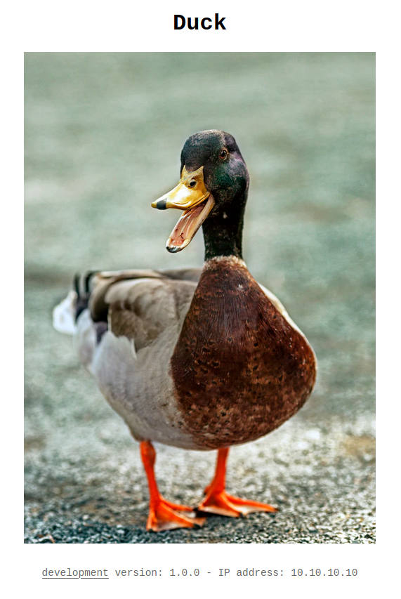
It’s a simple page about a duck.
The development site displays a mock of private IP address : 10.10.10.10.
This address came from the metadata task returned from the special address http://169.254.170.2/v2/metadata.
This is a link-local address.
Hosting the production image on ECR
You can modify some variables in the make.sh file to customize your tests :
#
# variables
#
# AWS variables
AWS_PROFILE=marine
AWS_REGION=eu-west-3
# project name
PROJECT_NAME=github-actions-ecr
# Docker image name
DOCKER_IMAGE=github-actions-ecr
We build the production image :
$ make build
This command does this :
$ VERSION=$(jq --raw-output '.version' vote/package.json)
$ docker image build \
--tag $DOCKER_IMAGE:latest \
--tag $DOCKER_IMAGE:$VERSION \
.
The production version of the Dockerfile is simple :
FROM node:14.3-slim AS build
WORKDIR /app
ADD package.json .
RUN npm install
FROM node:14.3-slim
ENV NODE_ENV production
ENV PORT 80
WORKDIR /app
COPY --from=build /app .
ADD . .
EXPOSE 80
CMD ["node", "index.js"]
We run this image locally :
$ make run
We open http://localhost:3000 :
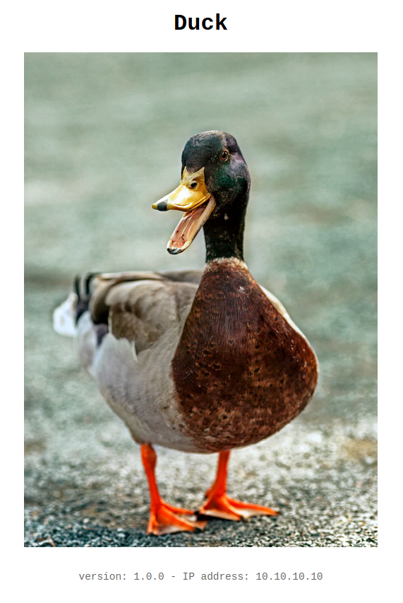
To put this image on ECR you need to create a repository :
$ make ecr-create
This command does this :
$ aws ecr create-repository \
--repository-name $PROJECT_NAME \
--region $AWS_REGION \
--profile $AWS_PROFILE
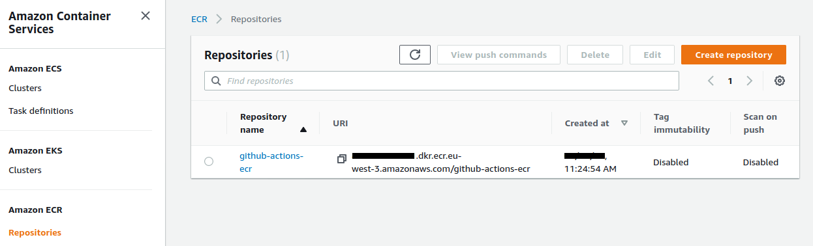
We push this image to ECR :
$ make ecr-push
This command does this :
# add login data into /home/$USER/.docker/config.json
$ aws ecr get-login-password \
--region $AWS_REGION \
--profile $AWS_PROFILE \
| docker login \
--username AWS \
--password-stdin $ACCOUNT_ID.dkr.ecr.$AWS_REGION.amazonaws.com
$ docker tag $DOCKER_IMAGE:latest $REPOSITORY_URI:1.0.0
$ docker push $REPOSITORY_URI:1.0.0
We now have our hosted image :
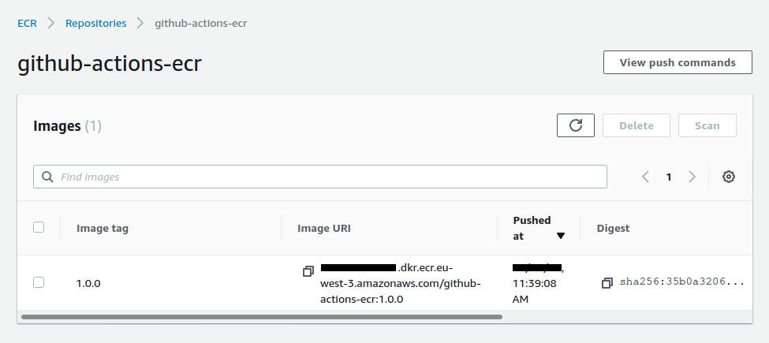
Using Terraform
We will use terraform to build our entire infrastructure on AWS.
Let’s take a look at some excerpts from Terraform files.
Creation of the VPC, subnets, Internet gateway and routing table in vpc.tf :
resource aws_vpc vpc {
cidr_block = "10.0.0.0/16"
enable_dns_hostnames = true
tags = {
Name = local.project_name
}
}
resource aws_subnet subnet_1 {
vpc_id = aws_vpc.vpc.id
cidr_block = "10.0.0.0/24"
availability_zone = "${var.region}a"
tags = {
Name = local.project_name
}
}
# ...
Creation of the load balancer, target group and listener in alb.tf :
resource aws_alb alb {
name = local.project_name
load_balancer_type = "application"
subnets = [aws_subnet.subnet_1.id, aws_subnet.subnet_2.id]
security_groups = [aws_security_group.alb.id]
tags = {
Name = local.project_name
}
}
# ...
Creation of the cluster, the task definition and the service in ecs.tf :
resource aws_ecs_task_definition task_definition {
family = var.project_name
container_definitions = <<DEFINITION
[{
"name": "site",
"image": "${var.ecr_image}",
"cpu": 0,
"essential": true,
"networkMode": "awsvpc",
"portMappings": [
{
"containerPort": 80,
"hostPort": 80,
"protocol": "tcp"
}
],
"privileged": false,
"readonlyRootFilesystem": false,
"logConfiguration": {
"logDriver": "awslogs",
"options": {
"awslogs-group": "${aws_cloudwatch_log_group.log_group.name}",
"awslogs-region": "${var.region}",
"awslogs-stream-prefix": "site"
}
}
}]
DEFINITION
execution_role_arn = aws_iam_role.ecs_task_execution_role.arn
network_mode = "awsvpc"
requires_compatibilities = ["FARGATE"]
cpu = 256
memory = 512
}
The ecr_image variable is defined as empty by default in the variable.tf file :
variable ecr_image {
default = ""
}
This variable is defined in the make.sh file, in the tf-apply fonction :
$ export TF_VAR_ecr_image=$ACCOUNT_ID.dkr.ecr.$AWS_REGION.amazonaws.com/$PROJECT_NAME:1.0.0
$ terraform plan \
-out=terraform.plan
$ terraform apply \
-auto-approve \
terraform.plan
To initialize Terraform we use this command :
$ make tf-init
To build the infrastructure, the cluster and the service we simply execute command :
$ make tf-apply
We have some information in the terminal :
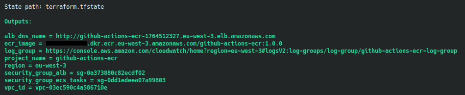
We use the DNS name URL of the load balancer in our browser :
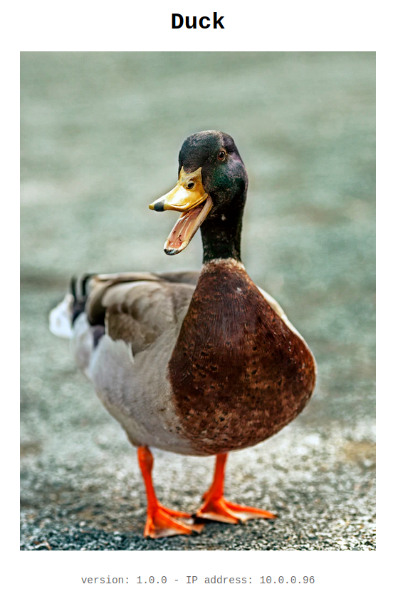
We reload our browser, we see another private IP :
Our ECS cluster has 1 service :
The 2 tasks works properly :
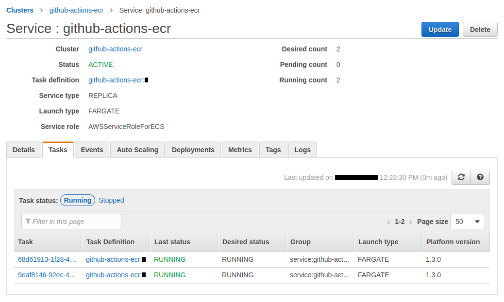
The target group linked to our load balancer shows us our 2 healthy targets :
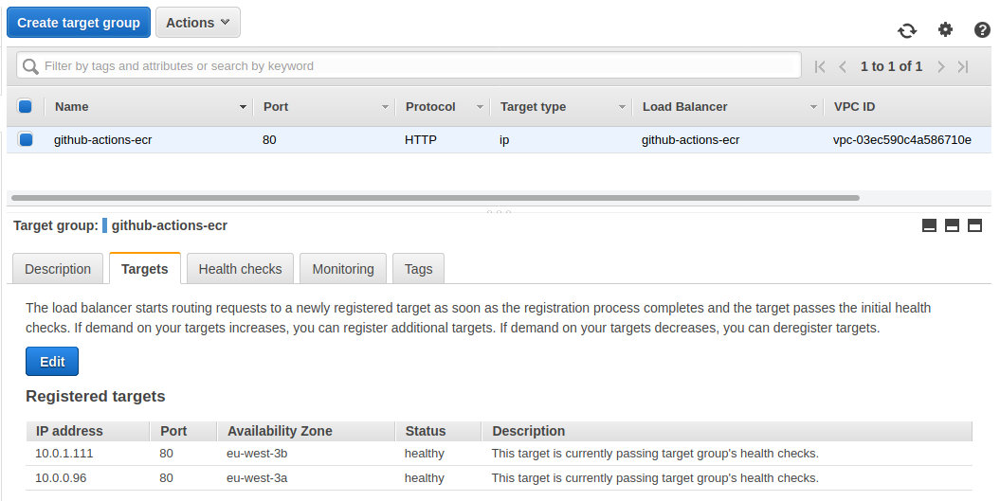
We can go to see the logs using the link displayed in our terminal :
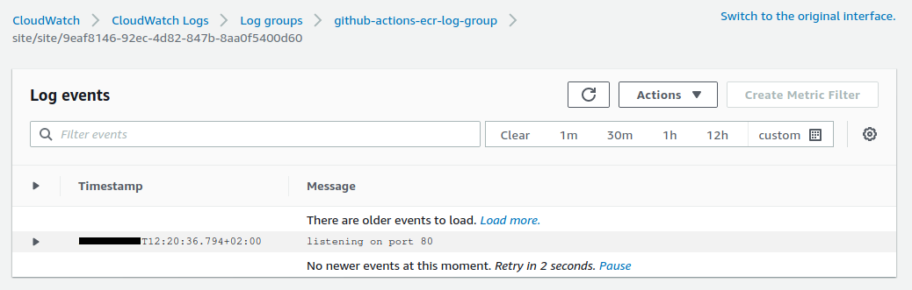
Using github actions
Github actions is a great addition for the CI / CD offered by github.
The documentation is invaluable in discovering how it works and what it can do.
There is also an excellent learning path on githubtraining.
We have a .github/workflows/cd.yml file which we will break down step by step.
We react to push and pull request events by defining on :
on: [push, pull_request]
We define some environment variable by defining env :
env:
ECR_REPOSITORY: "github-actions-ecr"
AWS_REGION: "eu-west-3"
We choose the operating system on which we want to run our job with runs-on :
runs-on: ubuntu-latest
ubuntu-latest refers, at the time of writing, to this image.
Then we execute a series of actions using steps and uses.
steps:
- name: Clone
uses: actions/checkout@v2
The uses syntax matches the models :
{owner}/{repo}@{ref}{owner}/{repo}/{path}@{ref}
This means that it uses the action defined in the actions/checkout repository.
This action checks-out your repository under
$GITHUB_WORKSPACE, so your workflow can access it.
Then we execute the next step :
- name: Configure AWS credentials
uses: aws-actions/configure-aws-credentials@v1
with:
aws-access-key-id: ${{ secrets.AWS_ACCESS_KEY_ID }}
aws-secret-access-key: ${{ secrets.AWS_SECRET_ACCESS_KEY }}
aws-region: ${{ env.AWS_REGION }}
We use this time the configure-aws-credentials action.
Configure AWS credential and region environment variables for use in other GitHub Actions.
This action uses secret variables.
We will store our identifiers AWS_ACCESS_KEY_ID and AWS_SECRET_ACCESS_KEY on github !
For security reasons, we are going to create a user with a set of project-specific access keys.
We create the user :
$ make create-user
This command does this :
$ aws iam create-user \
--user-name $PROJECT_NAME \
--profile $AWS_PROFILE \
2>/dev/null
# ECR full access policy
$ aws iam attach-user-policy \
--user-name $PROJECT_NAME \
--policy-arn arn:aws:iam::aws:policy/AmazonEC2ContainerRegistryFullAccess \
--profile $AWS_PROFILE
# ECS full access policy
$ aws iam attach-user-policy \
--user-name $PROJECT_NAME \
--policy-arn arn:aws:iam::aws:policy/AmazonECS_FullAccess \
--profile $AWS_PROFILE
The user is created :
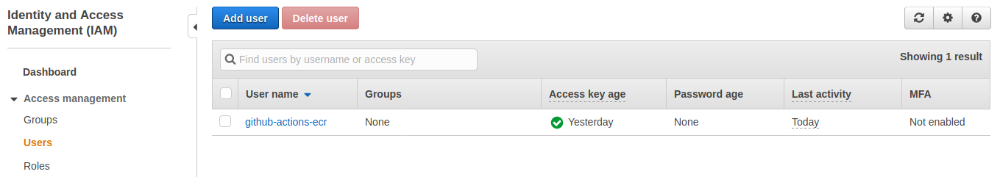
The permissions are attached :
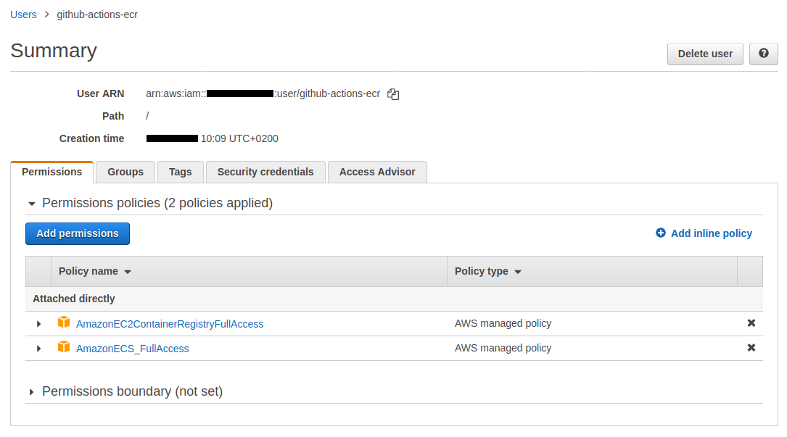
This script also created a secret.sh file which contains the secrets datas :
ACCOUNT_ID=0123456789
AWS_ACCESS_KEY_ID=ABCDEFGHIJKLMOP
AWS_SECRET_ACCESS_KEY=abcdEFGHijklMNOPqrstUVWX
We save these 3 variables in the Settings / Secrets page of this github repository :
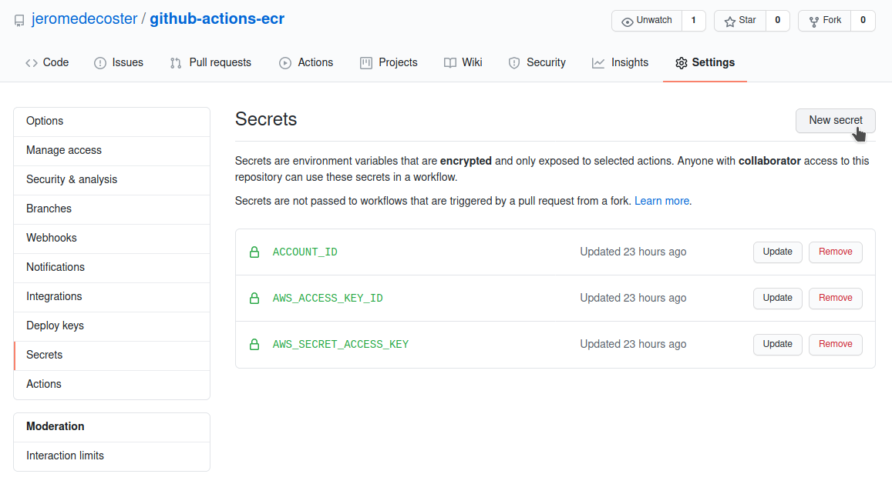
The next step allows you to log into ECR using the amazon-ecr-login action :
Logs in the local Docker client to one or more Amazon ECR registries.
We use id to identify our step.
- name: Login to Amazon ECR
id: login-ecr
uses: aws-actions/amazon-ecr-login@v1
It is important to note that this action will return a registry value whose definition is explained in the action.yml file.
outputs:
registry:
description: 'The URI of the ECR registry i.e. aws_account_id.dkr.ecr.region.amazonaws.com. If multiple registries are provided as inputs, this output will not be set.'
We will use this value by retrieving it via ${{ steps.login-ecr.outputs.registry }}.
The next step will be pure shell scripting via run.
The default shell is bash. Note that we can define another shell, including python.
We also use the special syntax ::set-output name={name}::{value} to output parameter.
This defines the image variable which will be accessible via the step id that we have given.
We can get it with this syntax : ${{ steps.build-image.outputs.image }}.
We also note the use of the variable github.sha which corresponds to the commit SHA that triggered the workflow run.
This is a part of a set of returned values.
- name: Build, tag, and push image to Amazon ECR
id: build-image
env:
ECR_REGISTRY: ${{ steps.login-ecr.outputs.registry }}
IMAGE_TAG: ${{ github.sha }}
run: |
cd duck
docker image build \
--tag $ECR_REGISTRY/${{ env.ECR_REPOSITORY }}:latest \
--tag $ECR_REGISTRY/${{ env.ECR_REPOSITORY }}:$IMAGE_TAG \
.
docker push $ECR_REGISTRY/${{ env.ECR_REPOSITORY }}:latest
docker push $ECR_REGISTRY/${{ env.ECR_REPOSITORY }}:$IMAGE_TAG
echo "::set-output name=image::$ECR_REGISTRY/${{ env.ECR_REPOSITORY }}:$IMAGE_TAG"
The next step writes our secret identifier in our task-definition.json file.
The point is to not store our aws root account id in our git repository.
- name: Sed
run: |
cd duck
sed -i 's/{{ACCOUNT_ID}}/${{ secrets.ACCOUNT_ID }}/' task-definition.json
This variable is located here :
{
"//": "...",
"cpu": "256",
"executionRoleArn": "arn:aws:iam::{{ACCOUNT_ID}}:role/ecsTaskExecutionRole",
"family": "github-actions-ecr"
}
The next step creates a new task definition in ECS :
It uses the amazon-ecs-render-task-definition action.
Inserts a container image URI into an Amazon ECS task definition JSON file, creating a new task definition file.
This step uses the image generated in the build-image step.
It get it via ${{ steps.build-image.outputs.image }}
- name: Render Amazon ECS task definition
id: task-def
uses: aws-actions/amazon-ecs-render-task-definition@v1
with:
task-definition: duck/task-definition.json
container-name: site
image: ${{ steps.build-image.outputs.image }}
This action will set the site container image variable in the task-definition.json file.
{
"requiresCompatibilities": [
"FARGATE"
],
"inferenceAccelerators": [],
"containerDefinitions": [
{
"name": "site",
"image": "",
"resourceRequirements": null,
"//": "..."
}
]
}
Note that this action returns the value task-definition as explained in the action.yml file.
outputs:
task-definition:
description: 'The path to the rendered task definition file'
The last step deploys this image on ECS using the amazon-ecs-deploy-task-definition action.
Registers an Amazon ECS task definition and deploys it to an ECS service.
- name: Deploy to Amazon ECS service
uses: aws-actions/amazon-ecs-deploy-task-definition@v1
with:
task-definition: ${{ steps.task-def.outputs.task-definition }}
service: github-actions-ecr
cluster: github-actions-ecr
wait-for-service-stability: true
This actions uses the value task-definition returned by the previous step with ${{ steps.task-def.outputs.task-definition }}.
The input task-definition is defined in the action.yml file.
inputs:
task-definition:
description: 'The path to the ECS task definition file to register'
required: true
Update the site
We modify the image of the duck in the index.ejs file :
- <img src="img/duck-1.jpg" alt="A Duck">
+ <img src="img/duck-2.jpg" alt="A Duck">
We modify the version number in the package.json file :
{
"name": "duck",
- "version": "1.0.0",
+ "version": "2.0.0",
"//": "..."
}
We push these modifications and the magic starts automatically :
$ git push
The action has started :
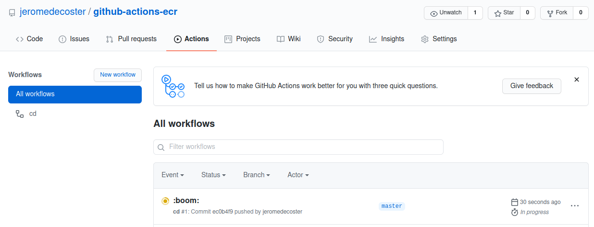
The steps are executed quickly :
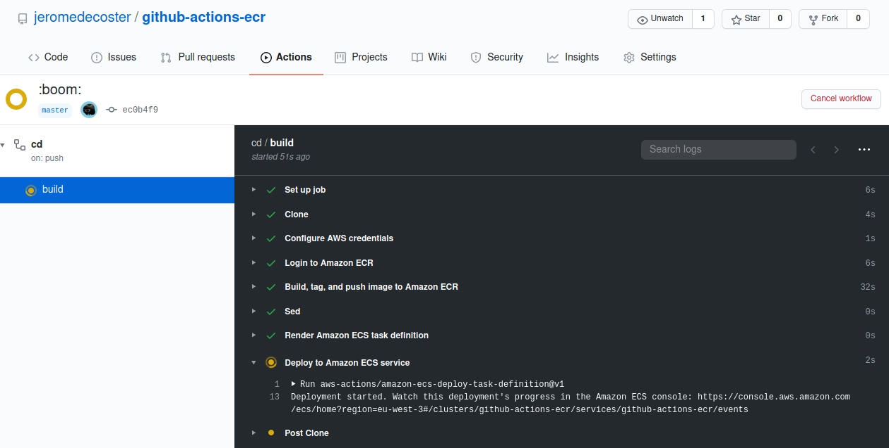
The new image is stored on ECR :
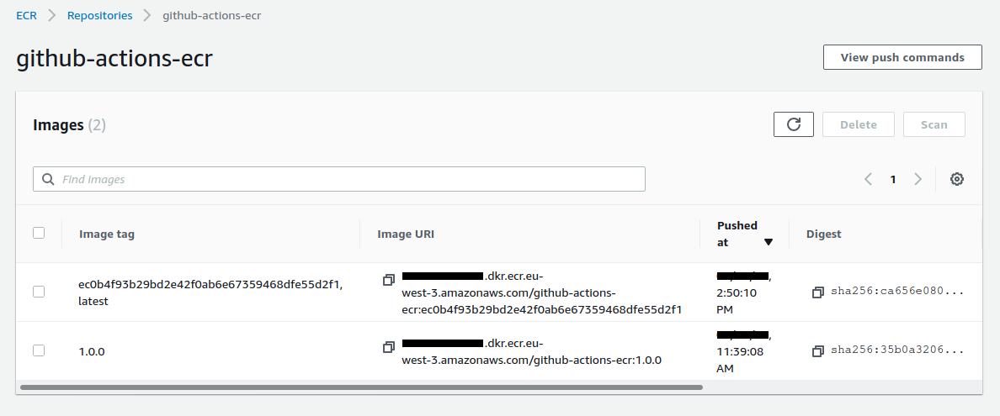
The service is updated. We have now 4 running tasks :
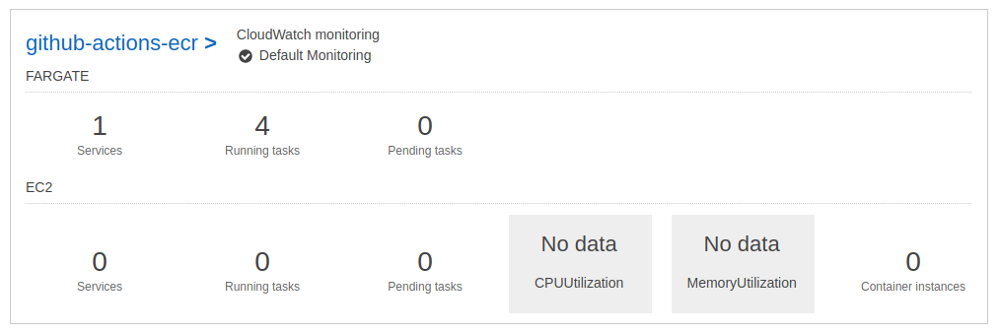
The 2 new tasks have been added :
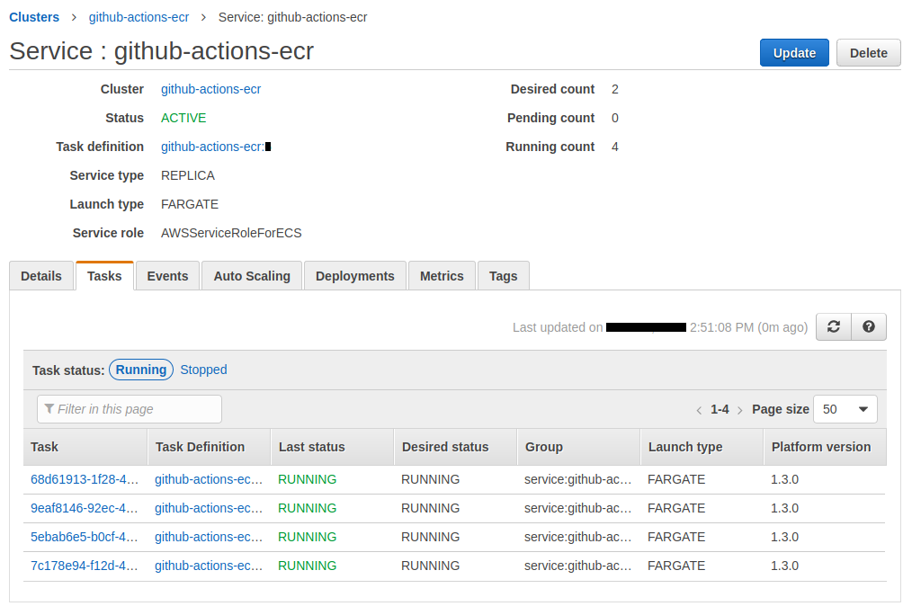
We reload our browser, we see the new site with a new private IP :
Reload again to see the other new private IP :
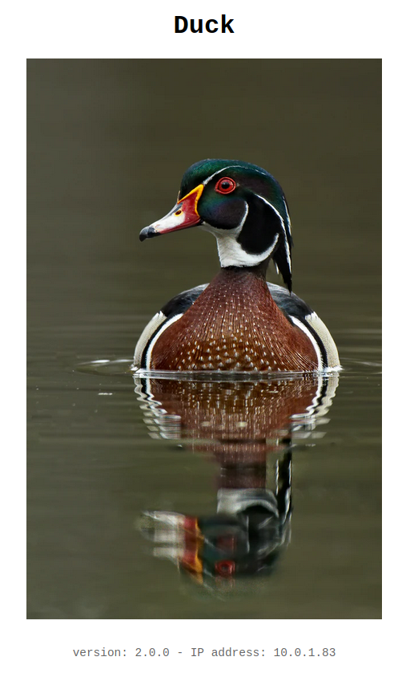
We have 4 running tasks but only 2 are accessible. If we reload our browser, we cannot review the old site.
The target group linked to our load balancer shows us out 2 healthy targets and 2 draining targets :
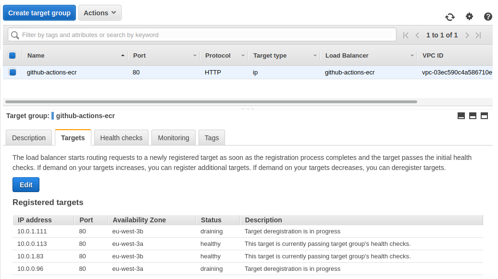
It takes several minutes for instances to be deregistered from the load balancer.
After that, all steps are completed :
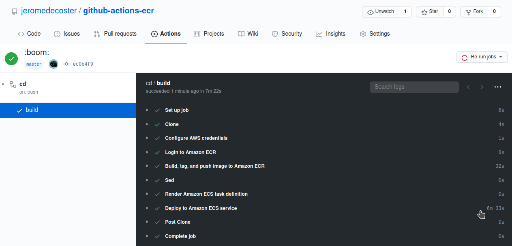
Now our service has 2 running tasks :
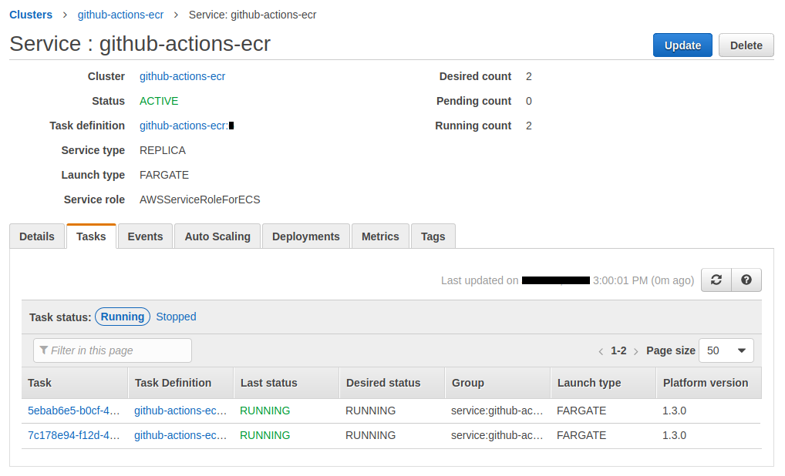
The drained instances have disappeared :
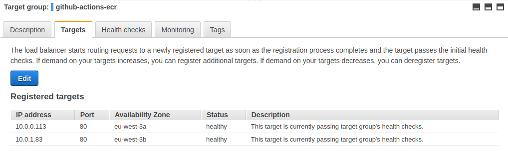
The demonstration is over, we can destroy our resources :
$ make tf-destroy
Github actions is easy to use. This will easily replace Jenkins for many tasks. This makes it a particularly interesting technology.